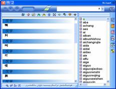
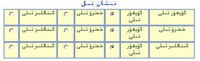
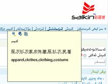
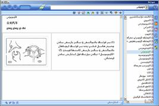
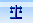

«بىلقۇت
خەزىنىسى» ھەققىدە
لۇغەت دېگەن ئاتالغۇ كۆپىنچە
كىشىلەرنىڭ كاللىسىدا توم-توم كىتابلارنىڭ سىماسىنى گەۋدىلەندۈرىدۇ. شۇنداقلا،
بىزگە يەنە قېلىن-قېلىن ۋاراقلار ئىچىدىن ئۆزىمىزگە كېرەكلىك بولغان
سۆز-ئىبارە،ئۇقۇملارنى ئىزدەشتىن ئىبارەت بىر جاپالىق جەرياننى ئەسلىتىدۇ.
ئۇچۇر-پەن تېخنىكا ئىلمىنىڭ بولۇپمۇ كومپىيوتىر تېخنىكىسىنىڭ ئۆزلۈكسىز تەرەققىياتى
بىزدە ئاشۇ جاپالاردىن ئازاد بولۇش ئۈمىدى تۇغۇلدۇردى. ئەنئەنىۋىي
لۇغەت تۈزۈش قائىدىسى بىلەن كومپيۇتېر
ئىلمىنىڭ ئىلمىي ھالدا بىرلەشتۈرۈلۈشى
ئاساسىدا، يېڭى بىر « كومپيۇتېر لۇغەتچىلىكى»
ئۇقۇمى مەيدانغا چىقتى. «
كومپيۇتېر لۇغىتى»
ئىشلىتىشنىڭ قۇلايلىقلىقى بىلەن بىزنى نۇرغۇن جاپادىن خالاس قىلىپلا قالماي، بەلكى
سۈرئىتىنىڭ تىز، تۇغرا ۋە ئۈنۈمىنىڭ ياخشىلىقى بىلەن بىزنىڭ نۇرغۇن قىممەتلىك
ۋاقتىمىزنى تىجەپ، ئۇچقاندەك تەرەققىي قىلىۋاتقان ئۇچۇر دەۋرىگە ماسلىشىشىمىزدا كەم
بولسا بولمايدىغان قورالغا ئايلاندى.
«بىلقۇت خەزىنىسى» شىنجاڭ ئۇنىۋېرسىتېتى بىلەن شىنجاڭ «بىلقۇت» ئېلېكترون پەن –
تېخنىكا تەرەققىيات چەكلىك شىركىتى بىرلىكتە جاپالىق ئىزدىنىش، خەلقنىڭ ئېھتىياجىنى
نەزەردە تۇتۇش، يۇقىرى يېڭى پەن تېخنىكا قوللىنىش ئارقىلىق ئىشلەپچىقارغان ئۇيغۇر
خەلقىنىڭ ئۆرپ - ئادەت، مەشھۇر شەخس، تېبابەت، ماقال تەمسىل،چۆچەك،
رېۋايەت، چالغۇ-ئەسۋاب،يېمەك-ئىچمەك
قاتارلىق ئۇيغۇر مەدەنىيەت خەزىنىسىدىكى بىباھار گۆھەرلەر؛ كارتون ئېلىپبە،
قانۇن - نىزام، ئىشارەت تىلى، پەلسەپە، تەنتەربىيە، فىزىكا، خىمىيە قاتارلىق 600
دىن ئارتۇق كەسپىي ساھەدىكى ئۇيغۇرچە، خەنزۇچە، ئىنگلىزچە 3 خىل تىل، 6 مىليوندىن
ئارتۇق سۆز، ئاۋاز ھەم سۈرەت بىر گەۋدىلەشتۈرۈلگەن نامايەندە خاراكتېرلىك كومپيۇتېر
يۇمشاق دېتالى بولۇپ، تۆۋەندە بىز بۇ يۇمشاق دېتالنىڭ ئىقتىدارى بىلەن تونۇشۇپ
چىقىمىز.
1.
يۇقىرى سۈرئەتتە ئىزدەش
«بىلقۇت خەزىنىسى» نىڭ ئىزدەش ئىقتىدارى دۇنياۋىي
سەۋىيىگە ئىگە بولۇپ، دۇنيانىڭ ھەرقايسى جايلىرىدا ئىشلىتىلىۋاتقان لۇغەت يۇمشاق
دېتالىغا سېلىشتۇرغاندىمۇ ئالاھىدە يۇقىرى ئورۇندا تۇرىدۇ.
2.
ئۇيغۇرچە، خەنزۇچە، ئىنگلىزچە يېزىقلارنى ئاپتوماتىك پەرقلەندۈرۈپ ئىزدەش
«بىلقۇت خەزىنىسى» گە ئۇيغۇرچە، خەنزۇچە، ئىنگلىزچە يېزىقلارغا ئاپتوماتىك
ھۆكۈم قىلىش ئىقتىدارى قوشۇلغان بولۇپ، بىز ئۇيغۇرچە، خەنزۇچە، ئىنگلىزچە خالىغان
تىلدىكى يېزىقنى تېكىست كىرگۈزۈش رامكىسىغا كىرگۈزسەك «بىلقۇت خەزىنىسى» شۇ
يېزىقنىڭ قايسى تىلدىكى يېزىق ئىكەنلىكىگە ئاپتوماتىك ھۆكۈم قىلغان ئاساستا
ئىزدەيدۇ ۋە شۇ يېزىقتىكى مۇھىتقا ئالمىشىدۇ.
3.
بىر
كونۇپكىنىڭ بىر قانچە خىل ئىقتىدارى
«بىلقۇت خەزىنىسى» نىڭ مەزمۇن دائىرىسىنىڭ كەڭلىكى سەۋەبىدىن بىر كونۇپكىغا بىر
نەچچە خىل ئىقتىدار مۇجەسسەملەندى
1)
 بۇ «ئۇ» بەلگىسى چۈشۈرۈلگەن كونۇپكىغا ئۇيغۇر
تىلىغا مۇناسىۋەتلىك ئۈچ خىل يۆنىلىش ئورۇنلاشتۇرۇلغان بولۇپ، بىز بۇ كونۇپكىنى بىر
چەكسەك «بىلقۇت خەزىنىسى» ئۇيغۇرچە ئىزاھلىق، ئىككىنچى قېتىم چەكسەك ئۇيغۇرچە –
ئىنگلىزچە، ئۈچىنچى قېتىم چەكسەك ئۇيغۇرچە – خەنزۇچە لۇغەت ھالىتىگە كىرىدۇ.
بۇ «ئۇ» بەلگىسى چۈشۈرۈلگەن كونۇپكىغا ئۇيغۇر
تىلىغا مۇناسىۋەتلىك ئۈچ خىل يۆنىلىش ئورۇنلاشتۇرۇلغان بولۇپ، بىز بۇ كونۇپكىنى بىر
چەكسەك «بىلقۇت خەزىنىسى» ئۇيغۇرچە ئىزاھلىق، ئىككىنچى قېتىم چەكسەك ئۇيغۇرچە –
ئىنگلىزچە، ئۈچىنچى قېتىم چەكسەك ئۇيغۇرچە – خەنزۇچە لۇغەت ھالىتىگە كىرىدۇ.
2)
 بۇ «中»
بەلگىسى چۈشۈرۈلگەن كونۇپكىغا خەنزۇ تىلىغا مۇناسىۋەتلىك ئۈچ خىل يۆنىلىش
ئورۇنلاشتۇرۇلغان بولۇپ، بىز بۇ كونۇپكىنى بىر چەكسەك «بىلقۇت خەزىنىسى» خەنزۇچە –
ئۇيغۇرچە، ئىككىنچى قېتىم چەكسەك خەنزۇچە – ئىنگلىزچە، ئۈچىنچى قېتىم چەكسەك
خەنزۇچە ئىزاھلىق لۇغەت ھالىتىگە كىرىدۇ.
بۇ «中»
بەلگىسى چۈشۈرۈلگەن كونۇپكىغا خەنزۇ تىلىغا مۇناسىۋەتلىك ئۈچ خىل يۆنىلىش
ئورۇنلاشتۇرۇلغان بولۇپ، بىز بۇ كونۇپكىنى بىر چەكسەك «بىلقۇت خەزىنىسى» خەنزۇچە –
ئۇيغۇرچە، ئىككىنچى قېتىم چەكسەك خەنزۇچە – ئىنگلىزچە، ئۈچىنچى قېتىم چەكسەك
خەنزۇچە ئىزاھلىق لۇغەت ھالىتىگە كىرىدۇ.
3)
 بۇ «E»
بەلگىسى چۈشۈرۈلگەن كونۇپكىغا ئىنگلىز تىلىغا مۇناسىۋەتلىك ئۈچ خىل يۆنىلىش
ئورۇنلاشتۇرۇلغان بولۇپ، بىز بۇ كونۇپكىنى بىر چەكسەك «بىلقۇت خەزىنىسى» ئىنگلىزچە
– ئۇيغۇرچە، ئىككىنچى قېتىم چەكسەك ئىنگلىزچە – خەنزۇچە، ئۈچىنچى قېتىم چەكسەك
ئىنگلىزچە ئىزاھلىق لۇغەت ھالىتىگە كىرىدۇ.
بۇ «E»
بەلگىسى چۈشۈرۈلگەن كونۇپكىغا ئىنگلىز تىلىغا مۇناسىۋەتلىك ئۈچ خىل يۆنىلىش
ئورۇنلاشتۇرۇلغان بولۇپ، بىز بۇ كونۇپكىنى بىر چەكسەك «بىلقۇت خەزىنىسى» ئىنگلىزچە
– ئۇيغۇرچە، ئىككىنچى قېتىم چەكسەك ئىنگلىزچە – خەنزۇچە، ئۈچىنچى قېتىم چەكسەك
ئىنگلىزچە ئىزاھلىق لۇغەت ھالىتىگە كىرىدۇ.
4)
 بىز بۇ يۈرەك شەكىلى چۈشۈرۈلگەن كونۇپكىنى بىر
چەكسەك تىزىملىك رامكىسىدا ئىشارەت تىلىنىڭ ئۇيغۇرچە تىزىملىكى يەنە بىر چەكسەك
ئىشارەت تىلىنىڭ خەنزۇچە تىزىملىكى كۆرۈنىدۇ.
بىز بۇ يۈرەك شەكىلى چۈشۈرۈلگەن كونۇپكىنى بىر
چەكسەك تىزىملىك رامكىسىدا ئىشارەت تىلىنىڭ ئۇيغۇرچە تىزىملىكى يەنە بىر چەكسەك
ئىشارەت تىلىنىڭ خەنزۇچە تىزىملىكى كۆرۈنىدۇ.
5)
 بىز بۇ ئادەمنىڭ باش قىسىم سۈرىتى چۈشۈرۈلگەن
سېرىق رەڭلىك كونۇپكىنى بىر چەكسەك تىزىملىك رامكىسىدا خەنزۇچە سۆزلىشىشنىڭ
ئۇيغۇرچە تىزىملىكى يەنە بىر چەكسەك خەنزۇچە تىزىملىكى كۆرۈنىدۇ.
بىز بۇ ئادەمنىڭ باش قىسىم سۈرىتى چۈشۈرۈلگەن
سېرىق رەڭلىك كونۇپكىنى بىر چەكسەك تىزىملىك رامكىسىدا خەنزۇچە سۆزلىشىشنىڭ
ئۇيغۇرچە تىزىملىكى يەنە بىر چەكسەك خەنزۇچە تىزىملىكى كۆرۈنىدۇ.
6)
 بىز بۇ ئادەمنىڭ باش قىسىم سۈرىتى چۈشۈرۈلگەن
ھاۋا رەڭلىك كونۇپكىنى بىر چەكسەك تىزىملىك رامكىسىدا ئىنگلىزچە سۆزلىشىشنىڭ
ئۇيغۇرچە تىزىملىكى يەنە بىر چەكسەك ئىنگلىزچە تىزىملىكى كۆرۈنىدۇ.
بىز بۇ ئادەمنىڭ باش قىسىم سۈرىتى چۈشۈرۈلگەن
ھاۋا رەڭلىك كونۇپكىنى بىر چەكسەك تىزىملىك رامكىسىدا ئىنگلىزچە سۆزلىشىشنىڭ
ئۇيغۇرچە تىزىملىكى يەنە بىر چەكسەك ئىنگلىزچە تىزىملىكى كۆرۈنىدۇ.
4.
خەنزۇتىلى يېزىقىنىڭ فونتىكىلق ئېلىپبەسى «پىنيىنى» بويىچە ئىزدەش.
«بىلقۇت خەزىنىسى» خەنزۇ
يېزىقىنىڭ فونىتىكىلىق ئېلىپبەسى بويىچە ئىزدەش ئىقتىدارىغا ئىگە بولۇپ، بىز «P» بەلگىسى چۈشۈرۈلگەن بۇ
كونۇپكىنى چېكىپ
تېكىست كىرگۈزۈش رامكىسىغا خەنزۇچە خەتنىڭ فونىتىكىلىق ئېلىپبەسى بويىچە
يېزىلىشىنى كىرگۈزسەك شۇ سۆزنىڭ خەنزۇچە خېتىنى تېپىپ بېرىدۇ.
رەسىم:

5.
خەنزۇتىلى يېزىقىنىڭ يان
بۆلەكلىرى بويىچە ئىزدەش.
«بىلقۇت خەزىنىسى»
خەنزۇچە خەتنىڭ يان بۆلەكلىرى بويىچە ئىزدەش ئىقتىدارىغا ئىگە بولۇپ، «笔»
بەلگىسى چۈشۈرۈلگەن بۇ
 كونۇپكىنى چېكىپ تىزىملىك رامكىسىدىكى يان بۆلەكلەر بويىچە خالىغان بىر يان
بۆلەكنى چەكسەك شۇ يان بۆلەكتىن باشلانغان سۆزلەرنى تېپىپ بېرىدۇ.
كونۇپكىنى چېكىپ تىزىملىك رامكىسىدىكى يان بۆلەكلەر بويىچە خالىغان بىر يان
بۆلەكنى چەكسەك شۇ يان بۆلەكتىن باشلانغان سۆزلەرنى تېپىپ بېرىدۇ.
رەسىم:

6.
سۈرىتى بار سۆزلەرنى سۈرىتى
بىلەن كۆرسىتىش.
«بىلقۇت خەزىنىسى» گە 20 مىڭ پارچىغا يېقىن سۈرەت
بىرلەشتۈرۈلگەن بولۇپ، ئىزدىمەكچى بولغان سۆزنىڭ سۈرىتى بار بولسا بىرلىكتە
كۆرسىتىپ بېرىدۇ.
رەسىم:

7.
تاللانغان سۆزلەرنى مائۇسنىڭ
ئوڭ كونۇپكىسى ئارقىلىق ئىزدەش.
«بىلقۇت خەزىنىسى» نىڭ مەزمۇن
كۆرسىتىش رامكسىدىكى خالىغان سۆزنى تاللاپ مائۇسنىڭ ئوڭ تەرىپىنى چېكىپ ئىزدەش
كونۇپكىسىنى باسساق شۇ سۆزنىڭ مەنىسى ۋە ئىزاھاتىنى تېپىپ بېرىدۇ.
رەسىم:

8.
سۆزلەرنى قوش چىكىش ئارقىلىق ئىزدەش.
«بىلقۇت خەزىنىسى» نىڭ يەنە بىر ئالاھىدىلىكى شۇكى «بىلقۇت خەزىنىسى» نىڭ
مەزمۇن كۆرسىتىش رامكىسىدىكى خالىغان سۆزنى قوش چېكىش ئارقىلىق شۇ سۆزنىڭ مەنىسى ۋە
ئىزاھاتىغا ئىگە بولالايمىز.
9.
ئىلگىرى ئىزدىگەن سۆزلەرنى
خاتىرىلەپ قويۇش.
«بىلقۇت خەزىنىسى» دە سىز
ئىلگىرى ئىزدىگەن سۆز خاتىرىلىنىپ ساقلىنىدىغان بولۇپ، سىز خالىغان ۋاقىتتا كەينىگە
چېكىنىش كونۇپكىسى ياكى خاتىرىلەش تىزىملىكىدىن ئىلگىرى ئىزدىگەن سۆزلەرنى
تاپالايسىز
ياكى خاتىرىلەش تىزىملىكىدىن ئىلگىرى ئىزدىگەن سۆزلەرنى
تاپالايسىز
رەسىم:

10.
ئىزدىگەندىن كېيىن
كۆرسىتىلدىغان مەنىسىنى بەلگىلەش.
«بىلقۇت خەزىنىسى» دە سىز ئىزدىگەن سۆزنىڭ قايسى تىلدىكى مەنىسىنىڭ
كۆرسىتىلىدىغانلىقىنى بەلگىلەش ئارقىلىق سىز ئىزدىگەن سۆزنىڭ شۇ تىلدىكى مەنىسى ۋە
ئىزاھاتىغا ئېرىشەلەيسىز.
رەسىم:

11.
ئۇيغۇر تىلىنىڭ كارتون
ئىلىپبەسى ۋە ئۇنىڭ ئۈچ خىل تىلدىكى چۈشەندۈرۈلۈشى.
«بىلقۇت خەزىنىسى» دە ئۇيغۇر
تىلىنىڭ كارتون ئېلىپبەسى ۋە ئۇنىڭ ئۈچ خىل تىلىدىكى چۈشەندۈرۈلۈشى بېرىلگەن بولۇپ،
بۇنىڭدىكى ئۇيغۇر يېزىقىنىڭ يېزىلىش قائىدىسى، شۇ ھەرىپ بىلەن بىرىككەن سۆزلەرگە
ماس ھەرىكەتلىك سۈرەتلەر، ماس جۈملىلەر، شېئىر، ماقال - تەمسىل، مۇناسىۋەتلىك
تېپىشماق ۋە شۇ ھەرىپ خاسلىقىنىڭ ئۈچ خىل تىلدىكى چۈشەندۈرۈلۈشى بېرىلگەن بولۇپ،
پەرزەنتلەرنىڭ ئۇيغۇر تىلىنى ئۆگىنىش ۋە ئۇنىڭ خاسلىقلىرىنى چۈشىنىۋېلىشىغا زور
دەرىجىدە قۇلايلىق ئېلىپ كېلىدۇ.
رەسىم:

12.
ئېكراندىكى ئۇيغۇرچە، خەنزۇچە، ئېنگلىزچە
سۆزلەرنى ئۆزئارا تەرجىمە قىلىش ۋە ئوقۇش.
ئىكراندىن سۆز تۇتۇپ تەرجىمە قىلىش «بىلقۇت خەزىنىسى»
نىڭ ئۆزىگە خاس، ئۇخشاش تىپتىكى باشقا يۇمشاق دېتاللارغا سېلىشتۇرغاندا ئىلغار
بولغان يەنە بىر ئىقتىدارى. بۇ ئىقتىدار دۆلەت ئىچىدىكى يۇمشاق دىتاللارغا سېلشتۇرغاندا ئىلغار بولۇپلا
قالماي بەلكى خەلقئارالىق يۇمشاق دىتاللارغا نىسبەتەنمۇ باشلامچى سەۋىيەگە
ئىگە ئالاھىدە تېخنىكىدۇر. چۈنكى «بىلقۇت خەزىنىسى» دە دۇنيا بويىچە تۇنجى بولۇپ
ئوڭدىن سولغا يېزىلىدىغان يېزىقلارنىڭ ئىكران يۈزىدىكى سۆزىنى تۇتۇش مەسىلىسى
ھەقىقىي تۈردە ئۈنۈملىك ھەل قىلىنغان. ئىكران يۈزىدىكى ھەر خىل يېزىقتىكى سۆزلەرنى
تۇتۇپ تەرجىمە قىلىش ئېقتىدارىنى مەزكۇر خەزىنىنى ئىشلەش گۇرۇپپىسى مۇستەقىل ھالدا
تەتقىق قىلىپ ئەمەلگە ئاشۇرغان!
بىز
مائۇسنى خالىغان بىر ئۇيغۇرچە، خەنزۇچە، ئىنگلىزچە سۆزنىڭ ئۈستىگە ئەكەلسەك شۇ
سۆزنىڭ باشقا ئىككى خىل تىلدىكى مەنىسى نۇر ئۆتكۈزۈشچان رامكا ئىچىدە كۆرۈنىدۇ.
رەسىم:
 

13.
كۆچۈرۈش تاختىسى ئارقىلىق ئۇيغۇرچە، خەنزۇچە، ئېنگلىزچە سۆزلەرنى ئۆزئارا
تەرجىمە قىلىش، ئوقۇش ، ئىزدەش.
«بىلقۇت خەزىنىسى» كۆچۈرۈش كونۇپكىسى ctrl+c
ئارقىلىق كۆچۈرۈپ ئېلىنغان سۆزلەرنى تەرجىمە قىلىش، ئوقۇش ۋە ئىزدەش ئىقتىدارىغا
ئىگە بولۇپ، بىز خالىغان بىر ياكى بىر گۇرۇپپا سۆزنى
ctrl+c
ئارقىلىق كۆچۈرۈپ ئالساق كىچىك بىر نۇر ئۆتكۈزۈشچان رامكىدا شۇ سۆزنىڭ مەنسى ۋە
ئوقۇش ، ئىزدەش كونۇپكىسى كۆرۈنىدۇ بىز شۇ كونۇپكىلار ئارقىلىق سۆزلەرنى
ئوقۇتالايمىز ۋە لۇغەتتىن ئىزدەش ئېلىپ بارالايمىز.
، ئىزدەش كونۇپكىسى كۆرۈنىدۇ بىز شۇ كونۇپكىلار ئارقىلىق سۆزلەرنى
ئوقۇتالايمىز ۋە لۇغەتتىن ئىزدەش ئېلىپ بارالايمىز.
رەسىم:

14.
ئىنگلىزچە ئاڭلاش ئىقتىدارىنى
يۇقىرى كۆتۈرۈش.
«بىلقۇت خەزىنىسى» گە ئىنگلىزچە ئۆگەنگۈچىلەر ئۈچۈن 90 دىن ئارتۇق ساھەدىكى
4000 جۈملە كىرگۈزۈلگەن بولۇپ، بىز بۇ
ئادەمنىڭ باش قىسىم سۈرىتى چۈشۈرۈلگەن سېرىق
رەڭلىك كونۇپكىنى بېسىش ئارقىلىق تىزىملىك رامكىسىدىن چىققان تىزىملىكتىن خالىغان
ساھەنى چەكسەك شۇ ساھەگە مۇناسىۋەتلىك جۈملىلەر مەزمۇن كۆرسىتىش رامكىسىدا
كۆرۈنىدۇ. شۇ جۈملىلەرنىڭ بېشىغا ئورۇنلاشتۇرۇلغان ئاۋاز بەلگىسىنى بېسىپ جۈملىنى
دىئالوگ شەكلىدە ئوقۇتۇپ ئاڭلاش ئارقىلىق ئىنگلىز تىلى سەۋىيىمىزنى يۇقىرى
كۆتۈرۈشتە تېخىمۇ ياخشى ئىمكانىيەتكە ئېرىشەلەيمىز.
رەسىم:

15.
تور
بەت ئادرېسلىرى
«بىلقۇت خەزىنىسى»گە چەتئەل ۋە جۇڭگودىكى 600 دىن ئارتۇق ئالىي مەكتەپ ۋە بىر قىسىم
ئۇيغۇر توربەت ئادرىسىلىرى كىرگۈزۈلگەن بولۇپ، بىز بۇ كىچىك ئۆي بەلگىسى چۈشۈرۈلگەن كونۇپكىنى بېسىپ مەزمۇن
كۆرسىتىش رامكىسىدىكى خالىغان تور بەت ئادرىسىنى چەكسەك شۇ توربەتكە ئۇلىنىدۇ.
كىچىك ئۆي بەلگىسى چۈشۈرۈلگەن كونۇپكىنى بېسىپ مەزمۇن
كۆرسىتىش رامكىسىدىكى خالىغان تور بەت ئادرىسىنى چەكسەك شۇ توربەتكە ئۇلىنىدۇ.
رەسىم:

16.
خەنزۇچە ئاڭلاش ئېقتىدارىنى
يۇقىرى كۆتۈرۈش.
«بىلقۇت خەزىنىسى» گە خەنزۇ تىلى ئۆگەنگۈچىلەر ئۈچۈن 120 دىن ئارتۇق
ساھەدىكى 5000 جۈملە كىرگۈزۈلگەن بولۇپ، بىز بۇ
ئادەمنىڭ باش قىسىم سۈرىتى چۈشۈرۈلگەن ھاۋا رەڭلىك كونۇپكىنى بېسىش ئارقىلىق
تىزىملىك رامكىسىدىن چىققان تىزىملىكتىن خالىغان ساھەنى چەكسەك شۇ ساھەگە
مۇناسىۋەتلىك جۈملىلەر مەزمۇن كۆرسىتىش رامكىسىدا كۆرۈنىدۇ بىز شۇ جۈملىلەرنىڭ
بېشىغا ئورۇنلاشتۇرۇلغان ئاۋاز بەلگىسىنى بېسىپ
جۈملىنى دىئالوگ شەكلىدە ئوقۇتۇپ ئاڭلاش ئارقىلىق خەنزۇ تىلى سەۋىيىمىزنى
يۇقىرى كۆتۈرۈشتە تېخىمۇ ياخشى ئىمكانىيەتكە ئېرىشەلەيمىز.
رەسىم:

17.
ئىشارە تىلى.
«بىلقۇت خەزىنىسى» دە يەنە تىل توسالغۇسى بارلارغا ئالاھىدە كۆڭۈل بولۈنگەن بولۇپ،
بىز بۇ يۈرەك شەكلى چۈشۈرۈلگەن كونۇپكىنى بېسىپ تىزىملىك
رامكىسىدىن چىققان سۆزلۈكلەرنى چېكىش ياكى تېكىست كىرگۈزۈش رامكىسىغا ئىزدىمەكچى
بولغان سۆزنى كىرگۈزسەك شۇ سۆزنىڭ سۈرىتى ۋە ئىشارەت قائىدىسى چۈشەندۈرۈلگەن
ئىزاھات ۋە خەنزۇچە، ئۇيغۇرچە مەنىلىرىگە ئېرىشەلەيمىز.
رەسىم:

18.
جۇڭخۇا خەلق جۇمھورىيىتىنىڭ
قانۇن-نىزاملىرى.
«بىلقۇت خەزىنىسى» گە 100
خىلدىن ئارتۇق جۇڭخۇا خەلق جۇمھۇرىيىتىنىڭ قانۇن – نىزاملىرى كىرگۈزۈلگەن بولۇپ بىز
بۇ  تارازا بەلگىسى چۈشۈرۈلگەن كونۇپكىنى بېسىپ
تىزىملىك رامكىسىدىن چىققان قانۇنلار تىزىملىكىدىكى خالىغان قانۇننى چەكسەك شۇ
قانۇننىڭ تولۇق قىسمىنى مەزمۇن كۆرسىتىش رامكىسىدىن كۆرەلەيمىز شۇنداقلا بۇ  تېكىست كىرگۈزۈش ئورنىغا ئۈزىمىز ئىزدىمەكچى
بولغان ئاچقۇچلۇق سۆزنى كىرگۈزۈپ بۇ
تېكىست كىرگۈزۈش ئورنىغا ئۈزىمىز ئىزدىمەكچى
بولغان ئاچقۇچلۇق سۆزنى كىرگۈزۈپ بۇ  ئىزدەش كونۇپكىسىنى باسساق
«بىلقۇت خەزىنىسى» بىز
كىرگۈزگەن سۆزگە مۇناسىۋەتلىك قانۇن - نىزاملارنىڭ باب، پاراگراف ۋە
ماددىلىرىنى كۆرسىتىپ بېرىپ، ئۆزىمىزنىڭ قانۇنىي مەنپەئەتىنى قوغدىشىمىزغا ياخشى
ياردەمچى بولالايدۇ.
ئىزدەش كونۇپكىسىنى باسساق
«بىلقۇت خەزىنىسى» بىز
كىرگۈزگەن سۆزگە مۇناسىۋەتلىك قانۇن - نىزاملارنىڭ باب، پاراگراف ۋە
ماددىلىرىنى كۆرسىتىپ بېرىپ، ئۆزىمىزنىڭ قانۇنىي مەنپەئەتىنى قوغدىشىمىزغا ياخشى
ياردەمچى بولالايدۇ.
رەسىم:

19.
ماتېرىيال ئامبىرى
«بىلقۇت خەزىنىسى» نىڭ
پايدىلىنىش ماتېرىياللار قىسمىغا ئىنسانىيەت، مەدەنىيەت، پەن – تېخنىكا،
پسىخولوگىيە، ئۆرپ – ئادەت، مەشھۇر شەخس، دۇنيا، جۇڭگو ۋە ئۇيغۇر خەلقىگە
مۇناسىۋەتلىك 140 خىلدىن ئارتۇق ساھەنىڭ ماتېرىيالى كىرگۈزۈلگەن بولۇپ، بىز بۇ
 ھۆججەت بەلگىسى چۈشۈرۈلگەن كونۇپكىنى بېسىپ
تىزىملىك رامكىسىدا كۆرۈنگەن ساھەلەردىن خالىغان بىرنى چەكسەك شۇ ساھەگە
مۇناسىۋەتلىك ئۇچۇرلار تىزىملىكى چىقىدۇ، شۇ تىزىملىكتىن خالىغان بىرنى چەكسەك
مەزمۇن كۆرسىتىش رامكىسىدا شۇ تۈرنىڭ مەزمۇنى كۆرۈنىدۇ.
ھۆججەت بەلگىسى چۈشۈرۈلگەن كونۇپكىنى بېسىپ
تىزىملىك رامكىسىدا كۆرۈنگەن ساھەلەردىن خالىغان بىرنى چەكسەك شۇ ساھەگە
مۇناسىۋەتلىك ئۇچۇرلار تىزىملىكى چىقىدۇ، شۇ تىزىملىكتىن خالىغان بىرنى چەكسەك
مەزمۇن كۆرسىتىش رامكىسىدا شۇ تۈرنىڭ مەزمۇنى كۆرۈنىدۇ.
20.
جەدۋەللىك ئۇچۇرلار.
«بىلقۇت خەزىنىسى» نىڭ جەدىۋەللىك ئۇچۇرلار قىسمىغا ئۆلچەم بىرلىكلىرى،
خىمىيىۋىي ئېلېمېنتلار، تىنىش بەلگىلىرى قاتارلىق 60 تىن ئارتۇق ساھەگە چېتىلىدىغان
جەدىۋەللەشكەن ماتېرىياللار
كىرگۈزۈلگەن بولۇپ، بۇ  كونۇپكىنى بېسىپ، تىزىملىك رامكىسىدىن خالىغان
بىر ساھە تىزىملىكىنى چەكسەك شۇ تۈرنىڭ جەدىۋەللەشتۈرۈلگەن ئۇچۇرى مەزمۇن كۆرسىتىش
رامكىسىدا كۆرۈنىدۇ.
كونۇپكىنى بېسىپ، تىزىملىك رامكىسىدىن خالىغان
بىر ساھە تىزىملىكىنى چەكسەك شۇ تۈرنىڭ جەدىۋەللەشتۈرۈلگەن ئۇچۇرى مەزمۇن كۆرسىتىش
رامكىسىدا كۆرۈنىدۇ.
21. تاللانغان رايوندىكى سۆزلەرنى ئوقۇش
«بىلقۇت خەزىنىسى» نىڭ ئاۋازلىق ئوقۇش ئىقتىدارى
ئۇيغۇر تىلىنى ئاپتوماتىك ئوقۇتۇش تېخنىكىسىنىڭ تۇنجى قېتىم ئەمەلىي ئىشلىتىلىدىغان
يۇمشاق دېتاللاردا ئىپادىلىنىشى بولۇپ، بىز خالىغان بىر ياكى بىر گۇرۇپپا سۆزلەرنى
تاللاپ بۇ ئوقۇش كونۇپكىسىنى بېسىش ياكى مائۇسنىڭ ئوڭ تەرىپىنى
چېكىپ چىققان رامكىدىن ئوقۇش تىزىملىكىنى چېكىش ئارقىلىق ئوقۇتۇپ ئاڭلىيالايمىز، بۇ
تېخنىكىنى مەزكۇز خەزىنىنى ئىشلەش گۇرۇپپىسى مۇستەقىل ھالدا تەتقىق قىلىپ ياساپ
چىققان.
ئوقۇش كونۇپكىسىنى بېسىش ياكى مائۇسنىڭ ئوڭ تەرىپىنى
چېكىپ چىققان رامكىدىن ئوقۇش تىزىملىكىنى چېكىش ئارقىلىق ئوقۇتۇپ ئاڭلىيالايمىز، بۇ
تېخنىكىنى مەزكۇز خەزىنىنى ئىشلەش گۇرۇپپىسى مۇستەقىل ھالدا تەتقىق قىلىپ ياساپ
چىققان.
22.
تور ئارقىلىق ئەلالاشتۇرۇش.
«بىلقۇت خەزىنىسى» دە تور ئارقىلىق ئەلالاشتۇرۇش يولغا
قويۇلغان بولۇپ، بىز «بىلقۇت» تورىنىڭ ئەلالاشتۇرۇش سەھىپىسىدىن «بىلقۇت خەزىنىسى»
نىڭ ئەلالاشتۇرۇش دېتالىنى چۈشۈرۈپ قاچىلىساقلا «بىلقۇت خەزىنىسى» ئەڭ يېڭى ھالەتكە
كېلىدۇ.
23.
كۆرۈنمە يۈزنىڭ يۆنىلىشىنى
ئۆزگەرتىش.
«بىلقۇت خەزىنىسى» ئۇيغۇر
خەلقىنى كۆزدە تۇتقان ئاساستا ئىشلەنگەن يۇمشاق دېتال بولۇپ، بۇ يۇمشاق دېتال تۇنجى
قوزغالغاندا ئۇيغۇر يېزىقىنىڭ يۆنىلىش قائىدىسى بويىچە ئوڭ يۆنىلىشتە قوزغىلىدۇ،
كۆپىنچە كىشىلەرنىڭ دائىم ئىشلىتىپ كېلىۋاتقان خەنزۇچە، ئىنگلىزچە يېزىقلارنىڭ
يۆنىلىشى بويىچە ئىشلىتىش قائىدىسىگە ھۆرمەت قىلىنىپ بۇ خەزىنىدە ئوڭ ۋە سول
يۆنىلىشكە يۆتكەش ھازىرلاندى. بىز «بىلقۇت خەزىنىسى» نىڭ تۆۋەنكى قىسمىغا جايلاشقان
بۇ «ئۇ» «中» «E»  بەلگىسى چۈشۈرۈلگەن كونۇپكىلارنى بېسىش ئارقىلىق
«بىلقۇت خەزىنىسى» نىڭ كۆرۈنمە يۈزىنى ئوڭ ياكى سول يۆنىلىشكە توغىرلاش مەقسىتىگە
يېتەلەيمىز.
بەلگىسى چۈشۈرۈلگەن كونۇپكىلارنى بېسىش ئارقىلىق
«بىلقۇت خەزىنىسى» نىڭ كۆرۈنمە يۈزىنى ئوڭ ياكى سول يۆنىلىشكە توغىرلاش مەقسىتىگە
يېتەلەيمىز.
24.
«بىلقۇت خەزىنىسى»نى ئىشلىتىشنى ئۆگىنىش.
«بىلقۇت خەزىنىسى» نىڭ
ئىقتىدارلىرى بىر قەدەر مۇرەككەپ بولغانلىقتىن بۇ خەزىنىنىڭ مەخسۇس ئۆگىتىش يۇمشاق
دېتالى سەپلەندى، بىز «بىلقۇت خەزىنىسى» قاچىلانغاندىن كېيىن ئىكران يۈزىدە پەيدا
بولغان بۇ سىن بەلگىنى قوش چېكىش
ئارقىلىق قوزغىتىپ «بىلقۇت خەزىنىسى» نىڭ خالىغان كونۇپكىلىرىنى ئىشلىتىش
قائىدىلىرىنى ئۆگىنەلەيمىز.